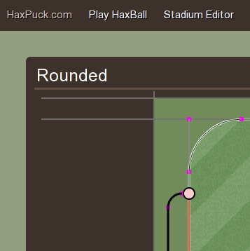
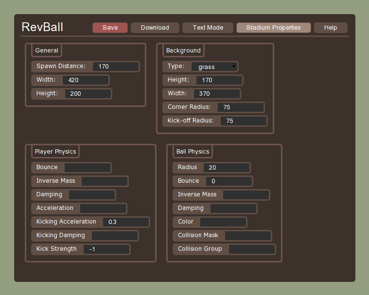

Haxpuck
Posted on August 13, 2012
Haxball is a very fun multiplayer soccer game. I have written Haxpuck, an editor for haxball stadiums. The source code is available on github.


Haxball is a very fun multiplayer soccer game. I have written Haxpuck, an editor for haxball stadiums. The source code is available on github.